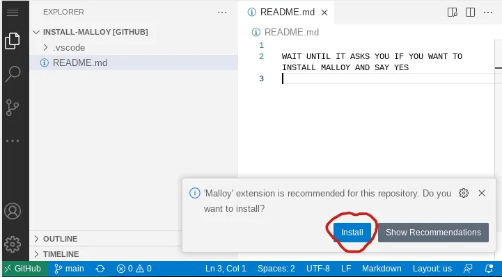
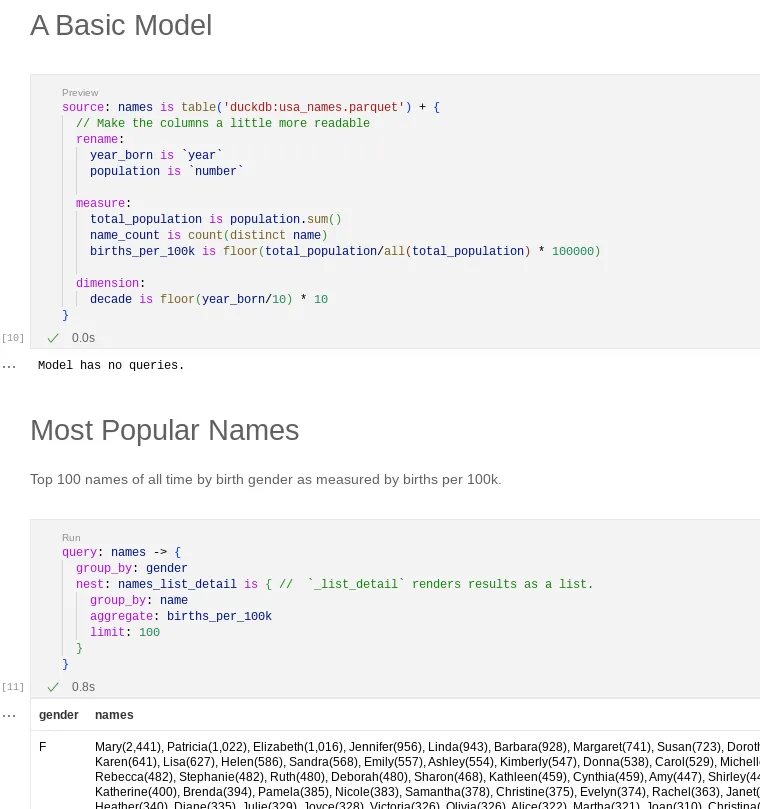
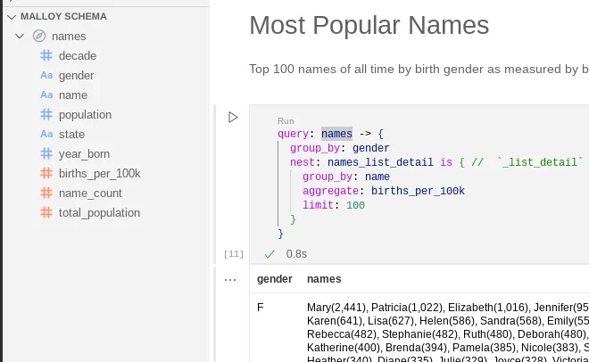
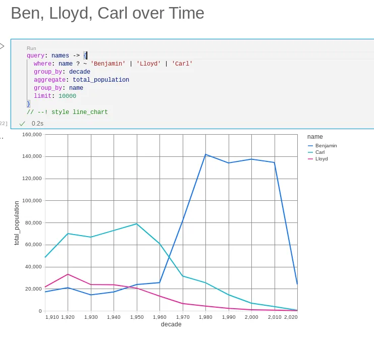
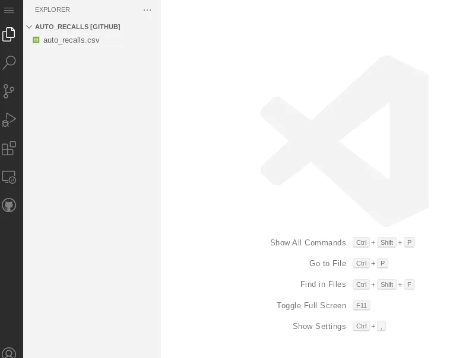
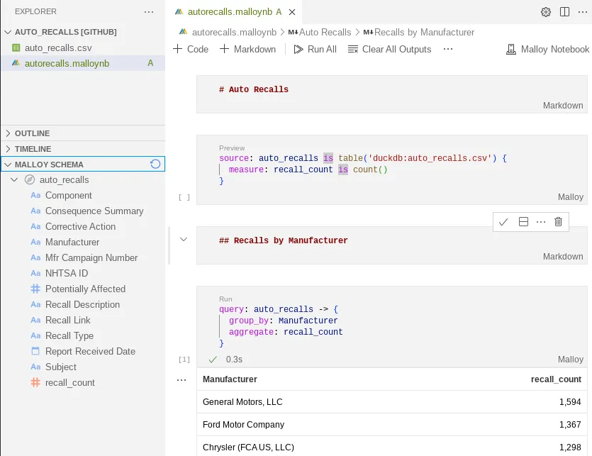
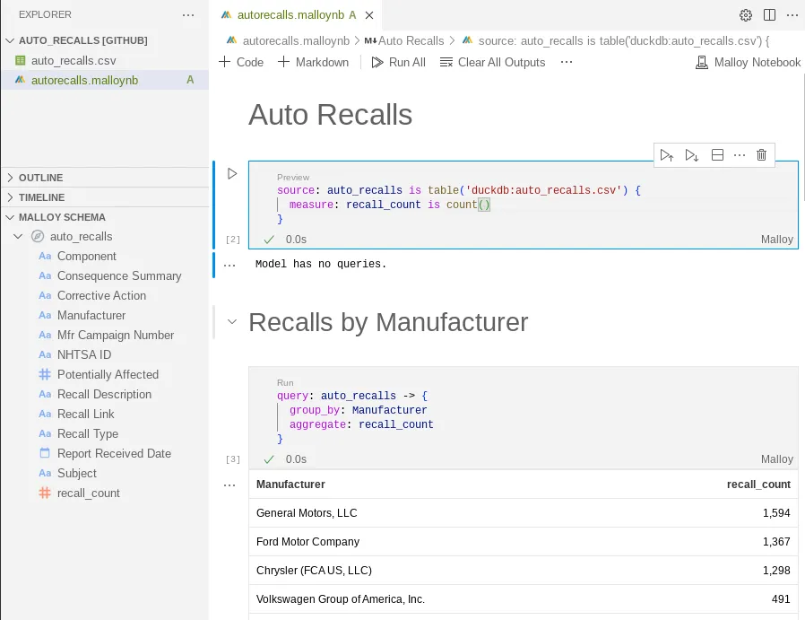

All Posts
All Posts
Notebooks feel great when working with data
March 10, 2023 by lloyd tabb
We always knew that putting Malloy into a data notebook would be pretty great, but I don’t think we quite realized how great it would be. Notebooks in Malloy showcase the re-usability of a semantic data model and the simplicity of writing complex queries.
Setting up Malloy - in browser.
One of the great things about Malloy is that it runs in all the places that VSCode runs. One of those places is Github (github.dev), an entirely browser based experience. Malloy has DuckDB built right in so all you really need is a browser.
To set up Malloy on github.dev, Go to the setup repository and say yes when it asks if you want to install. You can close this window once Malloy has been installed. You don’t have to do this again.
We’ve put together a few notebooks. Pretty amazingly, the Malloy code and data are all stored in repositories on Github. Try these notebooks we’ve built and then try it with your own data.
Open a notebook and then bonk Run All at the top of the page.
Auto Recalls - Recall data from Data.gov.
Baby Names - What are the 100 most common baby names, and by decade.
Plane Tracker - Map/Reduce example. Take flight records and map to individual airplane/days along with maps of where the plane flew.
Malloy Quickstart - we’ve converted the Malloy Quickstart documentation into a Notebook. Run all the examples. Try modifying them.
How it works
In a Malloy Notebook a cell is either Markdown or Malloy Code. The Malloy code is spread throughout the notebook. Each cell includes the code from the previous cells so you can define object in one cell and use it in the next. For example, the first cell below describes a data model with some measures and dimensions. The next cell uses these definitions.
Use the Schema
Whenever you are editing a Malloy Code Cell in a notebook, all the definitions available to you are located in the schema panel to the left. This makes programming easier.
Code in Style
Styles can be applied to rendered cells by placing a comment on the last line.
Make your own Notebook
Making your own notebook in Github is really easy.
Make a new repository in github.
Upload a some data (csv, parquet or json) and bonk the Commit changes button.
Press the Period Key on your keyboard (magic will happen). You should now be in VSCode!
Make sure you have the Malloy extension installed (If you ran any of the above examples, you should have it installed already).
From the menu File/New File. Give it a name with an extension of
.malloynb
Build your Notebook
Run it.
Commit your changes
More
Notebooks can work on your local machine and can work with BigQuery and Postgres. We’re just getting started here, so we’d love your feedback. If you make some public notebooks, please share them with us.